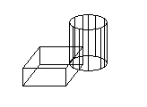
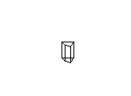

|
Boolean Method |
Performs a Boolean operation (union, intersect, or subtract) between the object and another 3DSolid or Region object.
Signature
object.Boolean(Operation, Object)
Object
3DSolid, Region
The objects this method applies to.
Operation
AcBooleanType enum; input-only
acUnion: Performs a union operation.
acIntersection: Performs an intersection operation.
acSubtraction: Performs a subtraction operation.
Object
Object; input-only
The object the operation is performed against.
Remarks
The first object is modified as a result of the operation.
 |
 |
| Solids before Boolean intersection |
Resulting solid from Boolean intersection |
NOTE If there is no result from the operation, the first object is not changed. For example, when finding the intersection between two non-intersecting objects, there is no change to the first object.
| Comments? |